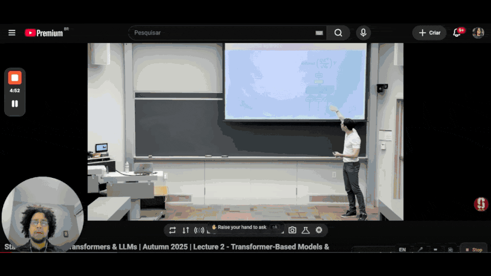
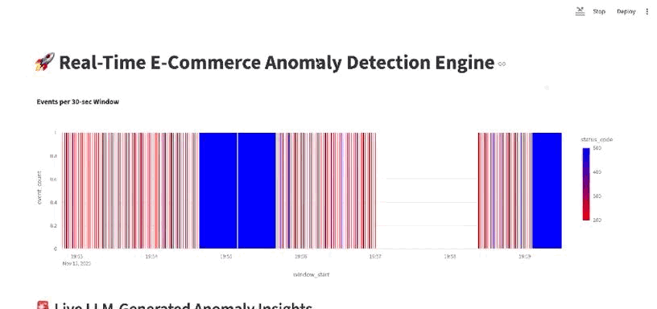
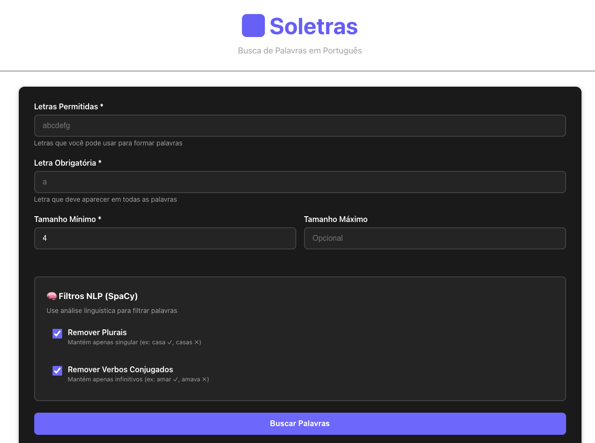
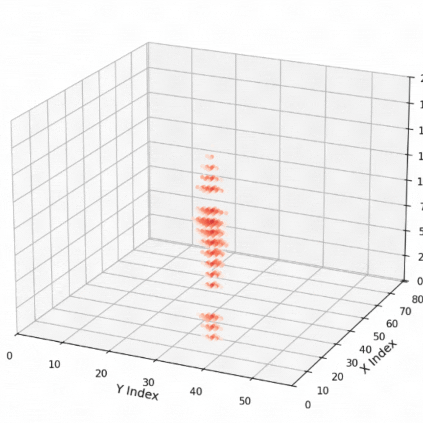
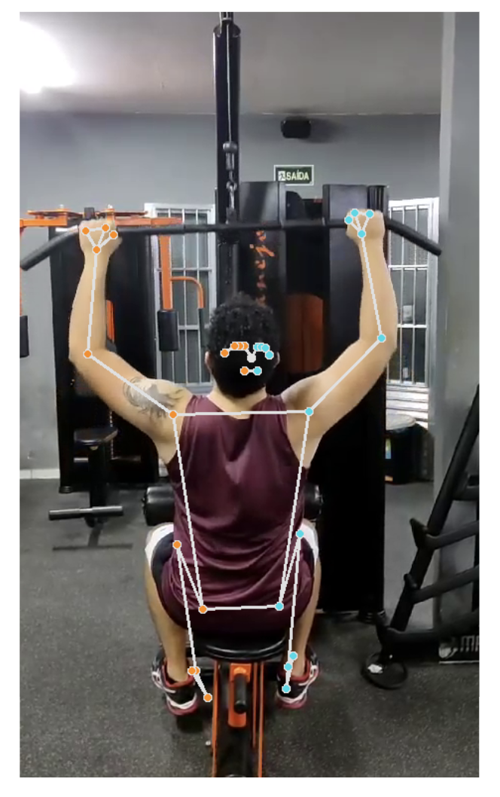
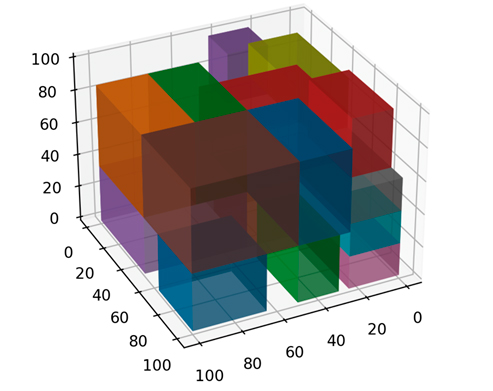
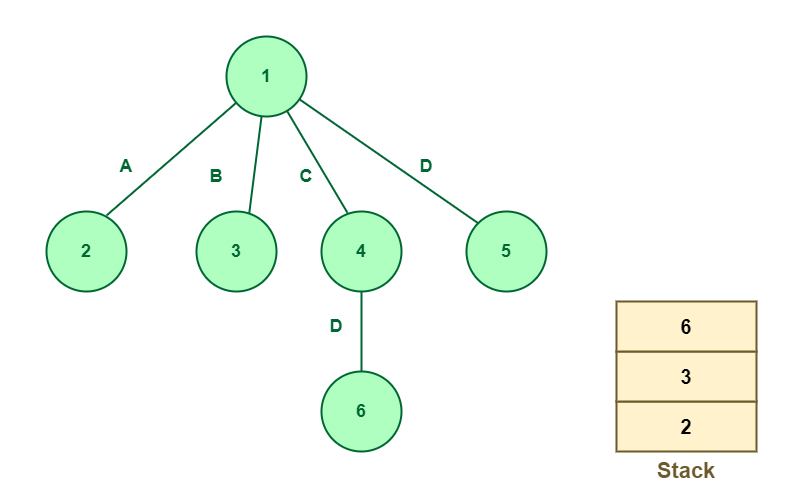
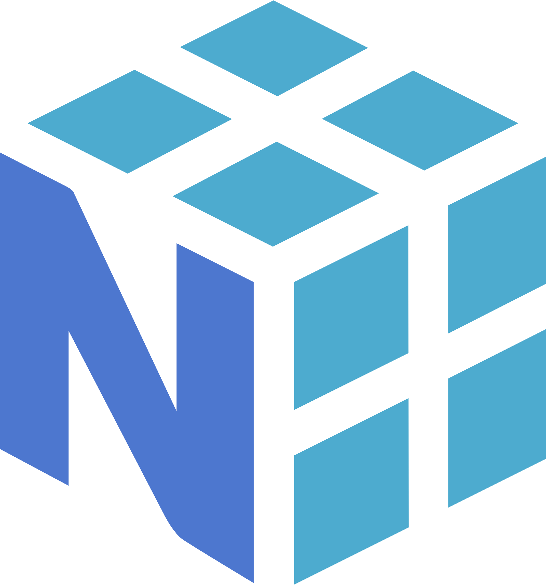

LF826-HB-(1)Section 4Systems data
Projects
Technical projects and contributions across machine learning, data engineering and algorithms.
4.1
Raise Your Hand
Chrome extension that turns YouTube university lectures into an interactive classroom. Pause a lecture and literally raise your hand: a webcam gesture detector triggers a course-aware voice TA that has read the entire playlist, answers out loud in your language, renders math and diagrams, and never spoils what the course hasn't taught yet.
- Full voice loop: streaming STT to LLM to sentence-level streamed TTS, with barge-in (talk over the TA to interrupt)
- Hand-raise detection with MediaPipe running in an offscreen document (Manifest V3)
- Course-map ingestion from lecture transcripts: spoiler-safe, timestamp-cited answers grounded in the syllabus
- Production deploy: Node backend + Python voice services behind Caddy on a VPS, with rate limiting and per-IP cost guards

LF-401A
4.2
Diet Pandas
Automated memory optimization library for Pandas DataFrames. Intelligently reduces memory usage by 50-80% through aggressive type downcasting while preserving data integrity. Published on PyPI with comprehensive documentation.
- Published on PyPI, available via pip install diet-pandas
- 50-80% memory reduction on real-world datasets (tested on 4.3M+ rows)
- Drop-in replacement for pandas.read_csv with automatic optimization
- Full documentation with MkDocs, benchmarks, and CI/CD pipeline
4.3
Rubber Duck Detection
Intelligent rubber duck detection system powered by YOLO deep learning architecture. Specifically designed for identifying rubber ducks in various environments with high accuracy and real-time processing capabilities.
- YOLO-based object detection for precise localization
- Robust to various lighting and weather conditions

LF-402A
4.4
Real-Time Anomaly Engine
Production-ready real-time anomaly detection engine for e-commerce logs. It combines high-throughput Kafka ingestion, Spark structured streaming, and TimescaleDB for metrics storage, plus LLM-powered insights.
- End-to-end streaming pipeline with Kafka and Spark
- RAG pipeline + embeddings for LLM-guided root cause insights
- Automatic anomaly detection with alerting

LF-403A
4.5
Soletras
Brazilian word searcher system that helps people complete the Brazilian SpellingBee. Features advanced filtering and search capabilities powered by SpaCy NLP.
- SpaCy NLP to filter conjugated verbs and plurals
- 550,633+ Brazilian Portuguese words
- Modern React 18 + Vite frontend

LF-404A
4.6
PUMLE
Innovative data pipeline for geological carbon storage in Brazilian reservoirs. Transforms complex simulation outputs into streamlined multidimensional arrays.
- Multi-format export (NumPy, Zarr, MAT-files, CSV)
- Optimized for large-scale geological simulations

LF-405A
4.7
Car Plate Detection
Intelligent license plate recognition system powered by YOLO deep learning architecture. Designed for Brazilian vehicle registration patterns with high accuracy.
- YOLO-based object detection for precise plate localization
- Character recognition optimized for Brazilian formats

LF-406A
4.8
Michael Scott Speak Generator
Text generation system powered by GPT-2 transformers architecture. Generates text in the style of Michael Scott from "The Office", leveraging advanced NLP techniques.
- Fine-tuning on character-specific dialogue
- Contextual understanding of "The Office" episodes
LF-407A
4.9
Motion Coach: Gym Assistant
Innovative gym assistant application that leverages computer vision to provide real-time feedback on exercise form and technique. Achieved F1-score of 0.92.
- Real-time pose detection and tracking
- Form analysis using keypoint detection

LF-408A
4.10
Bin Packing Optimizer
High-performance solution to the Variable-Sized Bin Packing Problem (VSBPP). Built from scratch in C++ to achieve optimal space utilization with minimal computational overhead.
- Optimized C++ implementation for maximum speed
- Variable-sized container support

LF-409A
4.11
Branch and Bound
Mathematical optimization powerhouse implementing the classic Branch and Bound algorithm. Designed to solve complex integer linear programming problems with guaranteed optimal solutions.
- Classic Branch and Bound implementation
- Integer linear programming solver

LF-410A
4.12
NumPy from Scratch
Ground-up recreation of NumPy's core functionality using pure C programming. Demonstrates deep understanding of memory management, array operations, and performance optimization.
- Pure C implementation for maximum control
- High-dimensional array manipulation

LF-411A